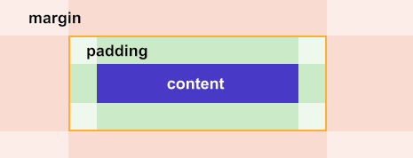

Отступы.
За отступы в CSS отвечают два свойства:
Внутренние отступы — отступы от внешней границы блока до его содержимого. Эти отступы иногда называют полями.
Внешние отступы — отступы от внешней границы блока до границ родительского элемента или до соседних элементов.

Внешние отступы желательно задавать по направлению потока. В нормальном потоке элементы выстраиваются слева направо и сверху вниз, так что и отступы стоит задавать справа и снизу.
«Схлопывание» внешних отступов.
Вертикальный отступ между двумя соседними элементами равен максимальному отступу между ними. Например, если отступ одного элемента равен 50px, а второго 30px, то отступ между ними будет 50px. Этот эффект называется эффектом «схлопывания» внешних отступов.
Горизонтальные внешние отступы между элементами просто складываются. Например, горизонтальный отступ между двумя элементами с отступами по 30px будет равен 60px.
«Выпадание» внешних отступов.
«Выпадание» — это ещё один эффект, связанный с вертикальными внешними отступами.
Если внутри родительского блока расположить блок и задать ему отступ сверху, то внутренний блок прижмётся к верхнему краю родительского, а у родительского элемента появится отступ сверху. То есть верхний отступ внутреннего элемента «выпадает» из родительского элемента.
Если у родительского элемента тоже был задан внешний отступ, то выберется максимальный отступ между собственным и «выпавшим».
Чтобы избавиться от эффекта выпадания, можно задать родительскому элементу внутренный отступ или рамку.
Внешние и внутренние отступы всегда складываются.
Горизонтальное центрирование элемента с помощью внешних отступов.
Чтобы отцентрировать блочный элемент, нужно выполнить следующие действия:
- Задать элементу ширину, которая меньше ширины родительского контейнера.
- Задать для внешних отступов справа и слева значение auto.
При значении auto для свойства margin браузер отдаёт внешним отступам всё свободное пространство в родительском контейнере.
Пример:
width: 200px;
margin: 0 auto;